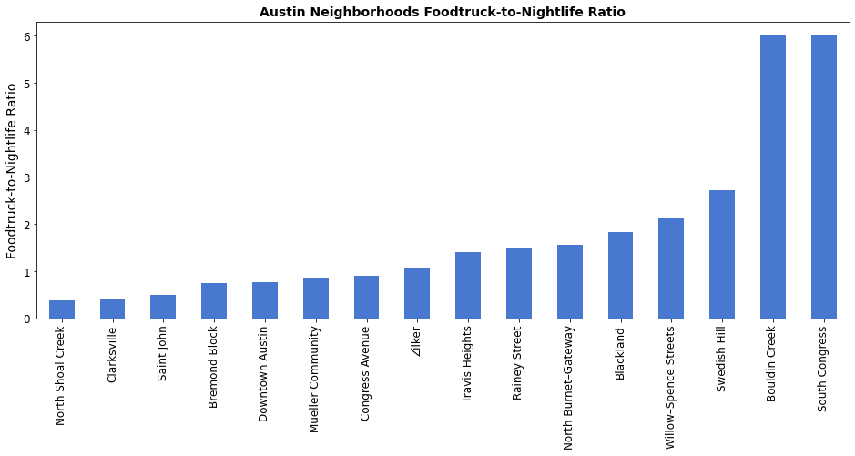
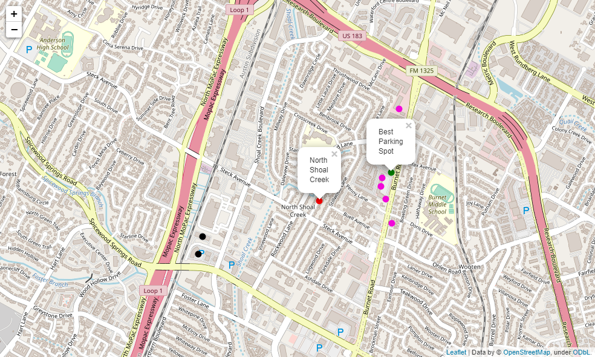

Battle of the Neighborhoods
This blog post discusses a highly-debated topic: where to park your new shiny food truck in Austin, Texas. In the tradition of this prestigious publication, we'll be answering that question using the power of data science!
Overview
With so many hip Austin neighborhoods, and so many delicious food trucks already, we need to know: which Austin neighborhoods are begging for a new food truck?
Being familiar with the business of food trucks, we know the answer will have to do with: how many nightlife spots a neighborhood has. Because food trucks and bars go together like peanut butter and jelly.
We'll also need to know: how many food trucks a neighborhood already has to determine if the market is saturated already. For example south congress has a lot of bars, but it also has a ton of food trucks. Good luck standing out in that neighborhood.
Austin Neighborhoods
Without further ado, here is a (hopefully exhaustive) list of the neighborhoods of Austin, Texas. For those interested, this list was sourced from this Wikipedia article.
|
|
|
Scoring the Neighborhoods
Now, for each neighborhood, we'll want to know: how many bars are the in proximity to that neighborhood. We'll also want to know how many food trucks are already parked in that neighborhood. To answer that, we'll use the trusty Foursquare API.
Example Foursquare API call
https://api.foursquare.com/v2/venues/explore?client_id=YOURCLIENTID&client_secret=YOURCLIENTSECRET&ll=30.3126857,-97.7368525&v=20201120&categoryId=4bf58dd8d48988d1cb941735&radius=1000&limit=50Neighborhoods with less than five bars are no place to park a food truck, so we'll remove those from our data set.
Now armed with information on each neighborhood's proximity to food trucks and bars, we'll calcualt a Foodtruck-to-Nightlife Ratio.
The bar chart below shows each neighborhood with five or more bars, and their respective Foodtruck-to-Nightlife ratios. As you can see, North Shoal Creek is looking in need of a new food truck.
Neighborhoods and Their FNR
| Neighborhood | Nightlife | Food Truck | FNR |
|---|---|---|---|
| North Shoal Creek | 8 | 3 | 0.375000 |
| Clarksville | 5 | 2 | 0.400000 |
| Saint John | 6 | 3 | 0.500000 |
| Bremond Block | 158 | 117 | 0.740506 |
| Downtown Austin | 169 | 130 | 0.769231 |
| Mueller Community | 7 | 6 | 0.857143 |
| Congress Avenue | 182 | 163 | 0.895604 |
| Zilker | 15 | 16 | 1.066667 |
| Travis Heights | 5 | 7 | 1.400000 |
| Rainey Street | 120 | 177 | 1.475000 |
| North Burnet–Gateway | 9 | 14 | 1.555556 |
| Blackland | 6 | 11 | 1.833333 |
| Willow–Spence Streets | 82 | 174 | 2.121951 |
| Swedish Hill | 14 | 38 | 2.714286 |
| Bouldin Creek | 10 | 60 | 6.000000 |
| South Congress | 9 | 54 | 6.000000 |
There you have it folks. The best neighborhood to park a new food truck in is North Shoal Creek!
Where in that Neighborhood Should I Park?
Another great question. We'll use the Foursquare API to pull a list of bars in North Shoal Creek, and try to segment them into clusters of similarly-located bars. The method we'll use will be DBSCAN. Clustering all the bars in North Shoal Creek gives us the following map.
You can see from the map there is a nice cluster of bars off of Burnet Road that look in need of a new hip food truck. We'll set our parking location right in the middle of all of those bars, averging the coordinates of bars in the large cluster. We can use the geopy library to convert that coordinate into an address and we get: 8524, Burnet Road, Austin, Texas, 78757.